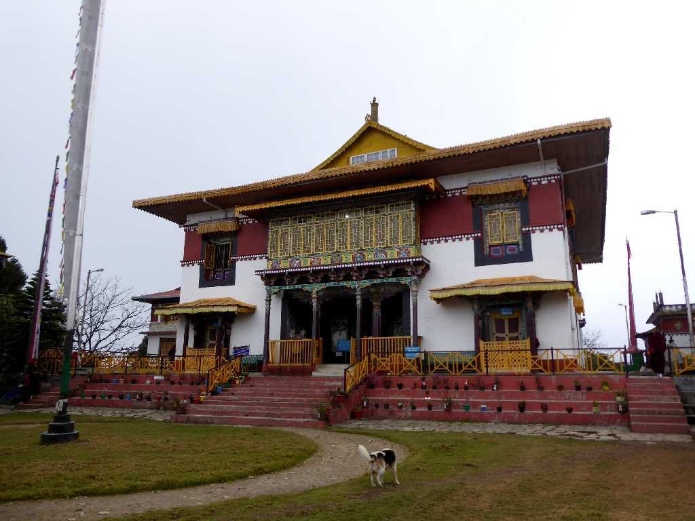
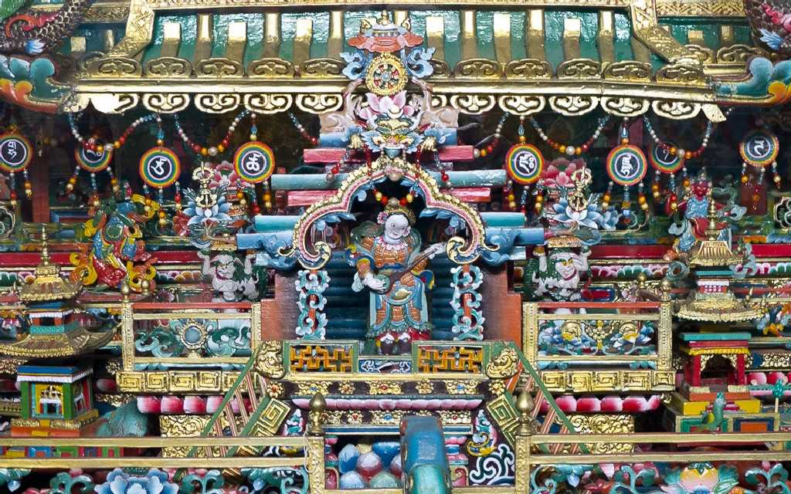
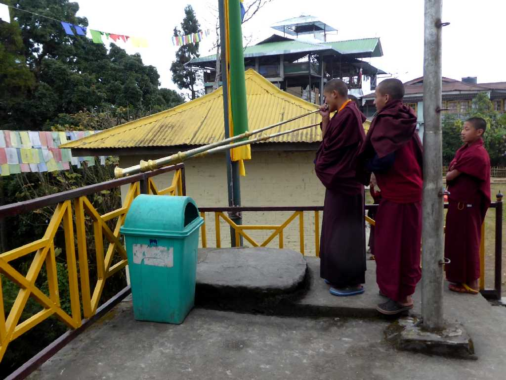
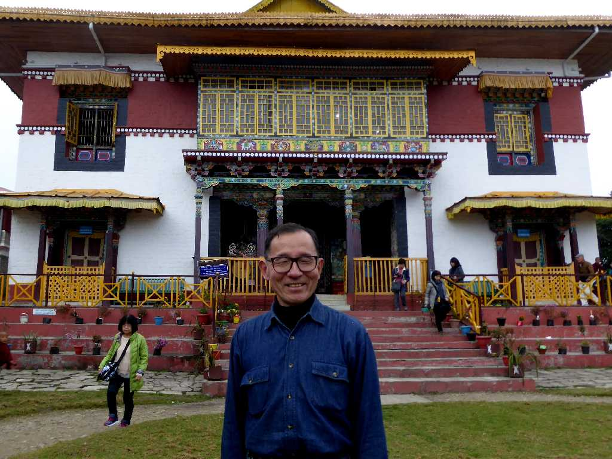

Pemayangtse Monastery Pelling Sikkim
ペマヤンチェ僧院は１７０５年に創られたシッキム最古の僧院

Three dimensional Mandala Pemayangtse Monastery
一本の大木から５年の歳月をかけて彫り出した美しい立体曼荼羅は天国を表している
Mural Pemayangtse Monastery
チベット仏教ニンマ派の僧院

Monk Pemayangtse Monastery
ホルンを奏でる僧侶達

November 28 2017 Pemayangtse Monastery